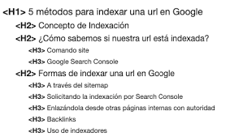

Los meta tags son fragmentos de texto que proporcionan información sobre el contenido de una página web. Se ubican dentro de la sección <head> del código HTML y no son visibles para los usuarios. Sin embargo, cumplen una función fundamental para los motores de búsqueda y servicios en línea, ayudando a interpretar la temática y relevancia del contenido. Estos elementos facilitan la optimización de la página en los resultados de búsqueda.
Existen varios tipos de meta tags, cada uno con una función específica para mejorar la indexación y presentación del sitio web en los buscadores y dispositivos:
Los meta tags se deben incluir dentro de la sección <head> de la estructura HTML de una página web. A continuación, un ejemplo de cómo se escriben correctamente:
<head>
<title>Ejemplo de Meta Tags</title>
<meta name="description" content="Ejemplo de descripción.">
<meta name="keywords" content="ejemplo, meta tags, SEO">
<meta name="robots" content="index, follow">
<meta name="viewport" content="width=device-width, initial-scale=1.0">
<meta charset="UTF-8">
</head>
<meta name="viewport" content="width=device-width, initial-scale=1.0">?El meta tag viewport es esencial para garantizar que la página web se vea correctamente en dispositivos móviles. Sin él, la página podría no ajustarse al tamaño de la pantalla, lo que podría dificultar la navegación y afectar la experiencia del usuario.
Los meta tags proporcionan información valiosa a los motores de búsqueda, como la descripción de la página y las palabras clave relevantes. Aunque no son el único factor que influye en el SEO, su correcta implementación puede mejorar la visibilidad y clasificación de la página en los resultados de búsqueda.
Si no se incluye una meta description, los motores de búsqueda podrían mostrar contenido aleatorio de la página como resumen en los resultados. Esto puede afectar la tasa de clics, ya que los usuarios podrían no encontrar una descripción relevante o atractiva de la página.
Los meta tags Open Graph permiten personalizar cómo se muestra una página web al ser compartida en plataformas como Facebook. Pueden definir elementos como el título, la imagen y la descripción que se mostrarán, lo que mejora la apariencia y relevancia de la página en las redes sociales.
Autora: Camila Xiomara Godínez Valdez